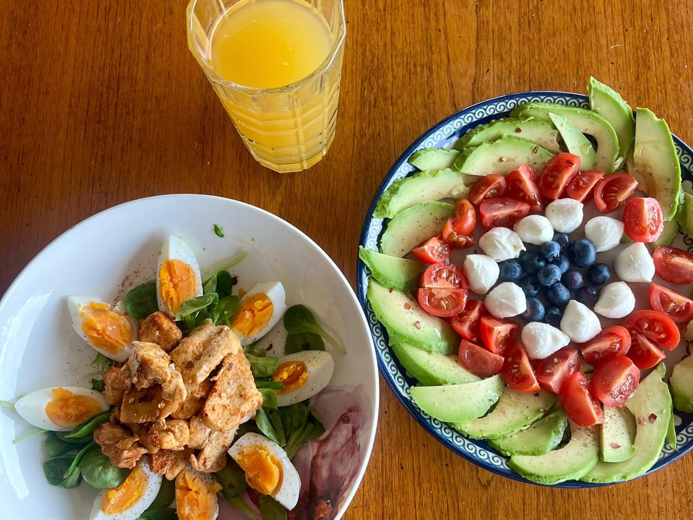

Sport & nutrition — 2 parts
01 — The beginnings of sport and nutrition
From an early age I was very active in sports, largely influenced by my father. I tried many different activities, including karate, tennis, volleyball, some athletics, breakdancing, skiing, and freerunning. Only between roughly the ages of 14 and 16 was there a period in which I was relatively inactive.
At 16 I was allowed to go to the gym with my father for the first time and had my first exposure to strength training and nutrition. My diet up to that point could hardly have been worse. I consumed very few micronutrients, disliked most vegetables and many other foods, and only maintained a relatively normal and lean physique because I had been very physically active. During this period, however, that activity declined significantly. Even though I had started going to the gym and trained about twice a week for two hours, the training was irregular.
During this time my diet deteriorated further, and I consumed extremely large amounts of sugar and alcohol. Around the age of 17 to 18 I slowly began to engage more seriously with training methodology. I trained much more frequently, around four to six times per week, but my diet was still poor. At that point my only concern was reaching my protein intake; everything else was largely irrelevant to me. I continued drinking large amounts of alcohol and consumed significant quantities of sugar.
In my mid-eighteen years I made a first small change, mainly because I had accumulated a noticeable amount of excess weight by then, which bothered me and negatively affected both my sports performance and my social life. I initially addressed this by increasing my training even further and by deciding to eliminate liquid calories, especially soft drinks like cola, which I had been consuming in large amounts. The excess weight disappeared quickly.
I discovered that I enjoyed strength training greatly, as well as the strength gains that came with it, and I began to focus more seriously on bodybuilding. One thing was clear to me: I wanted muscle, and a lot of it. I therefore started an extreme bulking phase that I maintained for quite a long time, running a very large caloric surplus. My diet was still not optimal, but it contained almost no industrially added sugar. I phrase this deliberately because I still ate a lot of fruit and consumed foods such as milk, which naturally contain sugar.
As a result, my weight increased rapidly. I went from about 84 kilograms to 100 kilograms, and within another year to roughly 109 kilograms at a height of 1.89 meters. This is clearly visible in the lower photo, where I weigh around 103 kilograms and already display very high strength levels at around the age of 21.

02 — Becoming a professional (and being known as Mr. Healthy)
Here as well there was a substantial shift. One reason was that I started playing much more volleyball at university, and moving heavy weights in the gym was no longer the primary goal. Many of my friends played volleyball or practiced calisthenics, and I joined them. For reasons that are somewhat difficult to explain, perhaps also influenced by modeling, I began to focus more on overall health rather than on a diet designed purely for bodybuilding, with its typical “extreme” bulks and cuts.
I then discovered several online influencers who focused on vitamins and minerals and introduced me to the concept of nutrient-dense foods. Nutrient-dense nutrition is based on combining whole foods, unprocessed products, in a deliberate way in order to meet the body's full vitamin and mineral requirements. For example, I learned that apples contain relatively few vitamins and are mainly valuable for fiber and digestive benefits, whereas green kiwis are excellent sources of vitamin K and vitamin C and provide antioxidants. These were insights I had not previously considered. Before that, I simply consumed very large amounts of protein and complex carbohydrates without paying much attention to the rest.
The topic became so interesting to me that I completed a small online certification in health and wellness coaching and began privately coaching friends and acquaintances. At work I also gave a longer presentation on the topic. I applied this knowledge consistently in my daily life without deviating from my plan and occasionally started posting my meals on social media, as well as uploading a few videos about nutrition.
My body changed accordingly. My blood work became better, my skin improved, and to this day I feel more comfortable in my body than ever before. I also developed a detailed understanding of what many foods actually contain. I was able to help many friends and eventually made it a mission to support people through coaching in achieving their goals, whether that is their ideal physique, improved health, or related objectives such as building muscle, where I also bring eight years of gym experience. More broadly, I aim to serve as an example of how much of one's physical and mental state can be influenced through deliberate action.
My training has also changed substantially. It is now a combination of classic cardio, primarily jump rope, rowing, jogging, and cross-country skiing, strength training through both weightlifting and calisthenics, as well as ball sports and motor-skill-oriented activities such as hiking, volleyball, and bouldering.
I maintain my body fat slightly below what is generally considered the typical healthy range. This is mainly due to the requirements of modeling and does not present any issues, as I still consistently reach nearly 100 percent of my micronutrient needs each day and maintain full performance both at work and in sports.